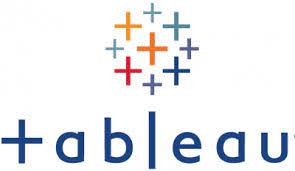

Hello!
I am passionate about big data and analytics with experience designing, developing, and implementing data-driven solutions.
I have extensive knowledge in Analytics, ETL and Business Intelligence. I’m well versed in using data to make strategic data-driven decisions and translate complex questions into meaningful insight, with the ability to identify deficiencies and recommend solutions. I'm able to quickly adopt new technologies and skills
in a fast-paced work environment.
I recently expanded my skill set by taking the Google Data Analyst Professional Certificate course. My experience in the
FinTech industry gives me the ability to translate complex business questions into meaningful insight.
Please see some of my projects below. Thank you!
This Analysis follows the six steps of the data analysis process: Ask, Prepare,
Process, Analyze, Share and Act.

In this project, I used Python to find correlations between variables. The Movie Industry (Four decades of movies) DataSet used was downloaded from Kaggle.
There are 6820 movies in the dataset (220 movies per year, 1986-2016)
In this project, I used SQL to clean Nashville Housing Data from Kaggle. Some of the skills used include: Standardize date format, Breaking out address into the individual column, change Y and N to Yes and No in 'sold as vacant' field, Remove Duplicate, Delete Unused Columns
In this project, I performed some Data Exploration with the COVID-19 dataset from Kaggle.
Some of the skills used include Joins, CTE's, Temp Table, Windows Function,
Aggregate Function, Converting Data Types, and Creating Views.

In this project, I used the same Covid19 dataset that was used for SQL Exploration to visualize my findings in Tableau.
In this project, I put together two projects. The first project was to determine if Covid 19 impacted some Bus
Stations in Ontario and the Time of the DAY. The second project was to: 1) Provide an update on Sales Performance
2) Changes in customer behavior.
LIST OF ARTIFACTS PRODUCED
Use Cases
Business Process Map
Task Flow